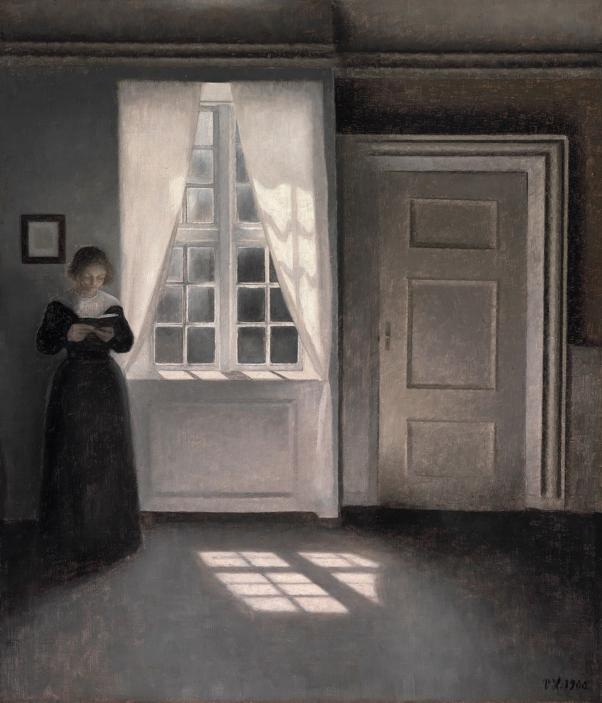

Kim jest „Stare Małe Dziecko”?
Czy można być jednocześnie starym i małym dzieckiem? Można. Bo ta opowieść nie mówi tylko o wieku.

To opowieść o człowieku, który przez całe życie pozostaje uczniem. Kiedy jesteśmy młodzi, wydaje nam się, że dorośli znają już wszystkie odpowiedzi. A później sami dorastamy. Mamy pracę, rodzinę, obowiązki. Podejmujemy ważne decyzje.
I odkrywamy coś niezwykłego: nadal się uczymy. Cierpliwości. Kochania. Przebaczania. Przyznawania się do błędów. Odpowiedzialności za drugiego człowieka. Wiary i zaufania.
„Stare Małe Dziecko” może mieć kilkanaście lat. Może mieć czterdzieści. Może mieć siedemdziesiąt. Dopóki człowiek potrafi powiedzieć:
„Nie wiem. Pomyliłem się. Naucz mnie. Spróbuję jeszcze raz.”
dopóty pozostaje w nim coś z dziecka. Być może najważniejsze pytanie nie brzmi: „Ile masz lat?”, tylko: „Czego życie próbuje cię jeszcze nauczyć?”
Mistrzowie dawnych rzemiosł
Młody człowiek przychodzi do warsztatu, żeby nauczyć się zawodu. Z czasem okazuje się, że warsztat uczy go czegoś więcej.
- Kowaluczy cierpliwości
- Zegarmistrzuczy szacunku do czasu
- Rzemieślnikpokazuje, że niedokładność ma konsekwencje
- Mistrzwie, że mądrość nie polega na tym, by nigdy się nie pomylić, bo sam kiedyś był uczniem
Bohaterowie serii
Stare Małe Dziecko to nie jeden bohater. To ktoś, kogo każdy z nas nosi w sobie.

Kolejne tomy
Tom I jest już dostępny. Tom II jest w przygotowaniu, a autor pisze kolejne. W przygotowaniu jest także seria „Stara Mała Dziewczynka”, dla osób szukających pogłębienia wiary i duchowej relacji z Bogiem.
Dziękujemy. Napiszemy w dniu premiery Tomu II.